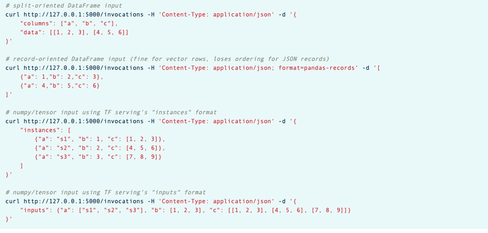

所属 Topic：机器学习 · 类型：方法
模型部署#
https://zhuanlan.zhihu.com/p/82451594
1. https://github.com/autodeployai#
https://zhuanlan.zhihu.com/p/82540025
2.mlflow#
MLFLOW
Databricks推出的mlflow, 偏向于算法模型的tracking管理、model管理
(1)Tracking 模块#
MLflow Tracking lets you log and query experiments using Python, REST, R API, and Java API APIs.
https://mlflow.org/docs/latest/tracking.html
包含的主要功能：
- log记录
- mlflow.log_param() 记录参数
- mlflow.log_metric() 记录metric
- mlflow.log_artifact() 记录相关文件
- Ui 展示
- mlflow ui， 并且支持编程获取结果数据
- Automatic log： 对于一些常用的库，支持自动记录，不用意义指定参数和metric。
- mlflow.sklearn.autolog()
- mlflow.lightgbm.autolog()
- ....
(2)mlflow.models#
对Models模块的定义为：这是一套标准格式来对模型结果进行打包，并可以被下游工具(如在线REST API服务和Apache Spark的批处理)所使用
https://zhuanlan.zhihu.com/p/67828170
mlflow的model都是一个文件的目录，其一般结构如下。 model.pkl是序列化后的模型，MLmodel是记录了模型的一些基本信息,比如支持的flavors(这个概念，应该是说模型应用支持的方式吧)
└── my_model
├── MLmodel
└── model.pkl
比如如下这个，这个模型可以被任何支持sklearn或python_function模型flavor的工具使用。
artifact_path: my_model
flavors:
python_function:
env: conda.yaml
loader_module: mlflow.sklearn
model_path: model.pkl
python_version: 3.7.0
sklearn:
pickled_model: model.pkl
serialization_format: cloudpickle
sklearn_version: 0.23.2
run_id: 5d5395f086af45bab59dd918a3f3bee6
utc_time_created: '2021-06-03 15:19:44.889054'
input#
模型的输入有两种形式： column-based(比如dataframe)， 或者tensor-based(比如numpy.ndarrays)
- 部署mlflow 的models
常用的三种命令
mlflow models serve ## 将模型部署为local REST API server
mlflow models predict ## 根据本地输入的csv/json文件进行预测
mlflow models build-docker
https://www.mlflow.org/docs/latest/models.html#pyfunc-deployment
中文 https://www.cnblogs.com/CheeseZH/p/11946260.html
curl -X POST -H "Content-Type:application/json; format=pandas-split" --data '{"columns":["alcohol", "chlorides", "citric acid", "density","fixed acidity", "free sulfur dioxide", "pH", "residual sugar", "sulphates", "total sulfur dioxide", "volatile acidity"],"data":[ [ 12.8, 0.029, 0.48, 0.98, 6.2, 29, 3.33, 1.2, 0.39, 75, 0.66] ] }' http://127.0.0.1:1234/invocations
数据输入格式:

import requests
import pandas as pd
import numpy as np
import sys
def test_mlflow():
# 构造需要进行推断的数据
test_data = pd.read_csv('test_data.csv').drop(columns=['Unnamed: 0'])
# 指定ip, 端口
url = "http://127.0.0.1:5001/invocations"
# 传递的参数需要从dataframe转化为json格式
req_data = test_data.to_json(orient='split')
# 指定headers参数
print(req_data)
headers = {'content-type': 'application/json; format=pandas-split'}
# 使用POST方式调用REST api
respond = requests.request("POST", url, data=req_data, headers=headers)
# 获取返回值
return np.exp(respond.json()[0])
(3) mlflow.projects 模块#
https://www.mlflow.org/docs/latest/models.html#built-in-deployment-tools
docker
https://zhuanlan.zhihu.com/p/78432719
publish: 主机的端口:容器的端口#
sudo docker run --publish 8503:8501 -it -v /home/zzzheng:/home/zzzheng registry.example.com/demo/logstat_simple:0.1 /bin/bash